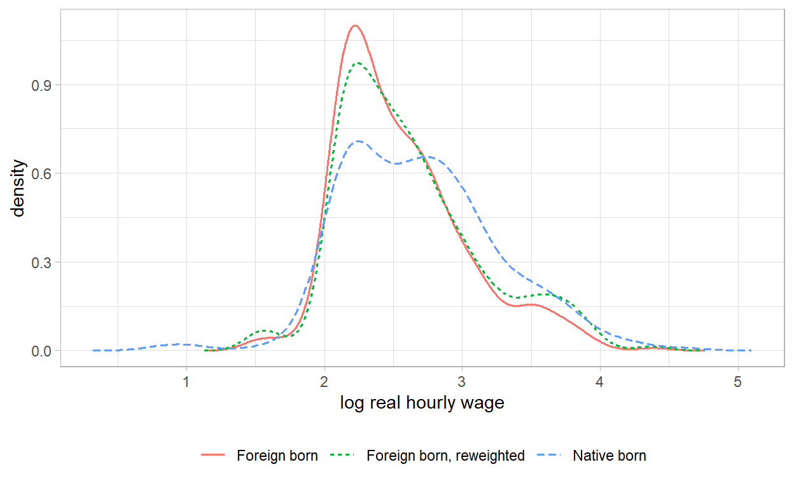

26 Decomposition Methods
The previous two chapters decompose a causal effect into the parts that travel through different channels. This chapter decomposes a difference: a wage gap between two groups, a change in an outcome between two periods, a coefficient that moves when controls are added, a variance that splits across sources. The two enterprises share arithmetic and almost nothing else, and conflating them is the most common error in the applied use of these tools.
The distinction is worth stating up front. A mediation decomposition asks what a treatment does on its way to an outcome, and every term in it is a contrast of potential outcomes. A Kitagawa-Oaxaca-Blinder decomposition asks how much of an observed gap between two groups would remain if the groups had the same characteristics, and its terms are contrasts of observed conditional means under a hypothetical reweighting. The second is a description of the data, and it becomes causal only under assumptions that the arithmetic itself never supplies (Fortin et al. 2011).
That said, decomposition is where a great deal of real mechanism evidence lives. When an applied paper reports that a coefficient falls by forty percent once industry controls are added, and concludes that industry composition explains forty percent of the effect, it is doing a decomposition badly. Doing it properly is the subject of Section 26.2, and it is probably the single most useful tool in this chapter for economists, finance researchers, and expert witnesses.
The chapter covers the aggregate mean decomposition and its identification problems, the conditional decomposition of covariate contributions, distributional decompositions that go beyond the mean, Shapley methods that resolve the ordering ambiguity that afflicts all of them, variance decompositions in two-way fixed-effects models, and the components-of-variance design that asks how much of an outcome belongs to each level of a nested hierarchy.
26.1 The Kitagawa-Oaxaca-Blinder Decomposition
The foundational device is due to Kitagawa (1955) in demography and independently to Oaxaca (1973) and Blinder (1973) in labor economics. Two groups, \(A\) and \(B\), differ in mean outcome. Fit a separate linear model in each group,
\[ Y_g = X_g' \beta_g + \varepsilon_g, \qquad g \in \{A, B\}, \]
so that \(\bar Y_g = \bar X_g' \hat\beta_g\) by the properties of least squares. The raw gap then splits as
\[ \bar Y_A - \bar Y_B = \underbrace{(\bar X_A - \bar X_B)' \hat\beta_B}_{\text{endowments}} \;+\; \underbrace{\bar X_B' (\hat\beta_A - \hat\beta_B)}_{\text{coefficients}} \;+\; \underbrace{(\bar X_A - \bar X_B)'(\hat\beta_A - \hat\beta_B)}_{\text{interaction}} . \]
This is the three-fold decomposition. The endowments term is what the gap would be if group \(B\)’s returns applied to the difference in characteristics; the coefficients term is what it would be if the two groups had group \(B\)’s characteristics but their own returns; the interaction term collects the remainder.
The two-fold version splits the gap into an explained part, attributable to differences in characteristics, and an unexplained part, attributable to everything else:
\[ \bar Y_A - \bar Y_B = \underbrace{(\bar X_A - \bar X_B)' \beta^*}_{\text{explained}} \;+\; \underbrace{\bar X_A'(\hat\beta_A - \beta^*) + \bar X_B'(\beta^* - \hat\beta_B)}_{\text{unexplained}}, \]
where \(\beta^*\) is a reference coefficient vector representing the returns that would prevail in the absence of the group difference. The choice of \(\beta^*\) is not determined by the data, and it matters a great deal.
26.1.1 Replication: The Chicago Nativity Wage Gap
The oaxaca package ships a sample of the 2000 Census public-use microdata for the Chicago metropolitan area, with log real hourly wage, nativity, sex, age, and education. The gap of interest is between native-born and foreign-born workers.
library(oaxaca)
data("chicago", package = "oaxaca")
ch <- chicago[complete.cases(chicago), ]
covs <- c("age", "female", "LTHS", "some.college", "college", "advanced.degree")
gap <- mean(ch$ln.real.wage[ch$foreign.born == 0]) -
mean(ch$ln.real.wage[ch$foreign.born == 1])
c(n = nrow(ch), share_foreign_born = mean(ch$foreign.born),
log_wage_gap = gap)
#> n share_foreign_born log_wage_gap
#> 666.0000000 0.5690691 0.1433657Native-born workers earn about fourteen log points more. The decomposition asks how much of that survives once age, sex, and education are equalized.
fA <- lm(reformulate(covs, "ln.real.wage"), data = subset(ch, foreign.born == 0))
fB <- lm(reformulate(covs, "ln.real.wage"), data = subset(ch, foreign.born == 1))
fP <- lm(reformulate(covs, "ln.real.wage"), data = ch) # pooled reference
xA <- colMeans(model.matrix(fA)); bA <- coef(fA)
xB <- colMeans(model.matrix(fB)); bB <- coef(fB)
bP <- coef(fP)
threefold <- c(
endowments = sum((xA - xB) * bB),
coefficients = sum(xB * (bA - bB)),
interaction = sum((xA - xB) * (bA - bB))
)
explained <- sum((xA - xB) * bP)
twofold <- c(explained = explained, unexplained = gap - explained)
round(c(threefold, sum = sum(threefold), twofold, raw_gap = gap), 4)
#> endowments coefficients interaction sum explained
#> 0.0769 0.1222 -0.0558 0.1434 0.0683
#> unexplained raw_gap
#> 0.0751 0.1434Cross-checking against the package confirms the arithmetic and supplies bootstrap standard errors.
set.seed(1)
ox <- oaxaca(ln.real.wage ~ age + female + LTHS + some.college + college +
advanced.degree | foreign.born, data = ch, R = 200)
round(ox$threefold$overall, 4)
#> coef(endowments) se(endowments) coef(coefficients)
#> 0.0769 0.0310 0.1222
#> se(coefficients) coef(interaction) se(interaction)
#> 0.0428 -0.0558 0.038626.1.2 The Index Number Problem
The two-fold decomposition needs a reference coefficient vector, and the literature offers at least half a dozen candidates: group \(A\)’s coefficients, group \(B\)’s coefficients, a simple average, a sample-share weighted average, the pooled regression with a group dummy (Neumark 1988), and the pooled regression without one (Oaxaca and Ransom 1994). Each corresponds to a different implicit counterfactual about which group’s returns are the “non-discriminatory” ones, and the data cannot choose among them.
How much does it matter?
refs <- list(`group A returns` = bA,
`group B returns` = bB,
`pooled` = bP,
`simple average` = (bA + bB) / 2)
sens <- sapply(refs, function(b) {
e <- sum((xA - xB) * b)
c(explained = e, unexplained = gap - e, share_explained = e / gap)
})
knitr::kable(
round(sens, 4),
caption = paste("The same wage gap decomposed under four choices of",
"reference coefficient vector. The share of the gap",
"attributed to characteristics rather than to returns",
"varies by more than a factor of three, and nothing in",
"the data adjudicates the choice.")
)| group A returns | group B returns | pooled | simple average | |
|---|---|---|---|---|
| explained | 0.0211 | 0.0769 | 0.0683 | 0.0490 |
| unexplained | 0.1222 | 0.0664 | 0.0751 | 0.0943 |
| share_explained | 0.1474 | 0.5367 | 0.4761 | 0.3421 |
The explained share in Table 26.1 ranges from about fifteen percent to about fifty-four percent depending on a choice the analyst makes before seeing any results. Any decomposition reported without stating the reference vector, and ideally without showing this sensitivity table, is not reproducible in any meaningful sense.
26.1.3 The Detailed Decomposition Is Not Invariant
A second and more insidious identification problem afflicts the detailed decomposition, which attributes parts of the unexplained component to individual covariates. When the regressors include a set of dummy variables with an omitted reference category, the split of the unexplained component between the intercept and the individual dummies depends on which category was omitted (Oaxaca and Ransom 1999). Changing the base education category changes the reported contribution of education to discrimination, with no change to the total.
Yun (2005) gives the standard fix: normalize the dummy coefficients so that they sum to zero within each categorical variable, which makes the intercept the grand mean rather than the omitted category’s value and renders the detailed decomposition invariant to the base. This normalization is not the default in most software, and detailed decompositions of categorical variables reported without it should be treated as arbitrary.
A related warning applies to the linear specification itself. Barsky et al. (2002) show, in the context of the Black-White wealth gap, that when the covariate distributions of the two groups overlap poorly, the linear decomposition extrapolates heavily and can be badly wrong; they propose a nonparametric reweighting alternative. Ñopo (2008) makes the common-support problem explicit by decomposing the gap into four parts, one of which is attributable to the region of covariate space where one group has no counterpart in the other. Reporting the fraction of each group that lies outside the other’s common support is a minimum diagnostic.
26.1.4 When Is a Decomposition Causal?
The explained component has a causal interpretation only under conditions that are stronger than they look (Fortin et al. 2011). Ignorability requires that group membership be as good as randomly assigned conditional on the covariates, which for immutable characteristics is a strange thing to assert. Overlap requires common support. And the counterfactual must be a well-defined intervention: “what if foreign-born workers had native-born workers’ education” presupposes an intervention on education that leaves everything else fixed.
VanderWeele and Robinson (2014) make the point for the specific and consequential case of race in regression models. Adjusting for a mediator of the race effect, such as education, yields a controlled direct effect of race holding education fixed, which is not “the effect of discrimination” and is often not any quantity of policy interest. Their recommended reframing, developed further in Jackson and VanderWeele (2018), is to ask about disparity reduction: how much would the gap fall under a specified intervention that changes the distribution of the mediator in the disadvantaged group to match the advantaged group’s? That estimand is well defined, it corresponds to something a policy could do, and it is estimated by the reweighting methods of Section 26.3 rather than by the coefficients term of an Oaxaca decomposition.
The safe reading of a Kitagawa-Oaxaca-Blinder decomposition is descriptive: this is how much of the gap is accounted for by differences in the listed characteristics, given the fitted models. The unexplained component is not “discrimination”; it is everything not in \(X\), including omitted variables, functional form error, and measurement error, and it grows mechanically as the covariate list shrinks.
26.2 The Conditional Decomposition of Covariate Contributions
Applied papers constantly report a sequence of specifications: the coefficient of interest is \(\beta\) with no controls, \(\beta'\) with demographic controls, \(\beta''\) with industry controls, and so on. The narrative attached to the shrinkage is a mechanism claim: “most of the raw gap is explained by industry sorting.”
This narrative has two defects. The attribution is order-dependent, so the contribution assigned to industry depends on whether industry was added second or fifth. And no standard error is attached, so a coefficient movement that is entirely sampling noise is reported as substantive.
Gelbach (2016) solves both problems, and the solution is elegant enough to derive in a paragraph. Let the base specification regress \(y\) on \(X_1\), and the full specification on \(X_1\) and \(X_2\). By the Frisch-Waugh-Lovell theorem, the omitted-variable-bias formula gives
\[ \hat\beta_1^{\text{base}} - \hat\beta_1^{\text{full}} = (X_1'X_1)^{-1} X_1' X_2 \, \hat\beta_2 = \hat\Gamma \hat\beta_2, \]
where the \(k\)-th column of \(\hat\Gamma\) holds the coefficients from regressing the \(k\)-th variable in \(X_2\) on \(X_1\). The total coefficient movement therefore decomposes exactly into one term per omitted covariate, \(\hat\Gamma_{\cdot k} \hat\beta_{2k}\), and the decomposition is invariant to the order in which the covariates are considered, because it never considers them in an order at all. Because both \(\hat\Gamma\) and \(\hat\beta_2\) are estimated by least squares, the delta method gives standard errors for each contribution.
base <- lm(ln.real.wage ~ foreign.born, data = ch)
full <- lm(reformulate(c("foreign.born", covs), "ln.real.wage"), data = ch)
X1 <- model.matrix(base)
X2 <- model.matrix(full)[, covs, drop = FALSE]
Gam <- solve(crossprod(X1), crossprod(X1, X2)) # auxiliary regressions
contrib <- Gam["foreign.born", ] * coef(full)[covs]
round(c(contrib,
TOTAL = sum(contrib),
base_coef = coef(base)[["foreign.born"]],
full_coef = coef(full)[["foreign.born"]],
actual_change = coef(base)[["foreign.born"]] -
coef(full)[["foreign.born"]]), 4)
#> age female LTHS some.college
#> 0.0591 0.0203 -0.0494 -0.0325
#> college advanced.degree TOTAL base_coef
#> -0.0175 -0.0300 -0.0500 -0.1434
#> full_coef actual_change
#> -0.0934 -0.0500The decomposition is exact: the contributions sum to the coefficient movement to machine precision. Substantively it says something the sequential narrative would have missed entirely. The foreign-born wage penalty falls from fourteen log points to nine when controls are added, a net movement of five log points, but that small net figure is the residue of two much larger offsetting forces. The four education terms together contribute about thirteen negative log points: foreign-born workers in this sample have less education, and equalizing education alone would close roughly ninety percent of the raw gap. Age pushes the other way by about six log points, because foreign-born workers are older and age is positively rewarded, so age was masking part of the penalty in the uncontrolled specification.
A sequential specification table would have shown the coefficient falling and invited the conclusion that controls “explain” the gap. The decomposition shows two large offsetting forces, one of which works against the story. This pattern, offsetting contributions that partially cancel in the total, is common and is invisible without the decomposition.
Two cautions. The decomposition is exact arithmetic about a specific pair of regressions; it inherits none of their causal credentials. And it answers “which covariates account for the coefficient movement”, not “which mechanisms carry the effect”. Reading it as mediation requires everything the mediation chapter requires, including the mediator-outcome unconfoundedness that a regression of this kind never delivers.
26.3 Distributional Decompositions
The mean is a poor summary of a gap that varies across the distribution. A wage gap may be near zero at the bottom, where minimum wages and institutional floors bind, and large at the top. Three families of methods extend decomposition beyond the mean.
26.3.1 Reweighting
DiNardo et al. (1996) introduced the workhorse. To construct the counterfactual distribution of group \(B\)’s outcomes under group \(A\)’s covariate distribution, reweight group \(B\) observations by
\[ \psi(x) = \frac{P(A \mid x)}{P(B \mid x)} \cdot \frac{P(B)}{P(A)}, \]
which is estimable from a single propensity model for group membership. The reweighted distribution answers “what would group \(B\)’s wage distribution look like if its members had group \(A\)’s characteristics but kept their own returns”, and comparing it to the two observed distributions splits any distributional statistic into a composition part and a structure part.
ps <- glm(reformulate(covs, "foreign.born"), data = ch, family = binomial)
p <- fitted(ps)
fb <- ch$foreign.born == 1
pA <- mean(!fb)
psi <- ((1 - p[fb]) / p[fb]) * ((1 - pA) / pA) # DFL weights
psi <- psi / mean(psi)
mA <- mean(ch$ln.real.wage[!fb])
mB <- mean(ch$ln.real.wage[fb])
mCF <- weighted.mean(ch$ln.real.wage[fb], psi)
round(c(native = mA, foreign_born = mB, counterfactual = mCF,
composition = mCF - mB, structure = mA - mCF,
total = mA - mB), 4)
#> native foreign_born counterfactual composition
#> 2.6967 2.5534 2.6143 0.0609
#> structure total
#> 0.0824 0.1434The reweighting attributes about forty-two percent of the mean gap to composition and the rest to structure, which is close to the pooled-reference Oaxaca answer but obtained without imposing linearity on the outcome equation. That is the method’s main advantage: it requires a model for group membership rather than for the outcome, and the outcome enters only through weighted averages. Figure 26.1 sets the counterfactual density against the two observed ones.
library(ggplot2)
dens <- rbind(
data.frame(x = density(ch$ln.real.wage[!fb])$x,
y = density(ch$ln.real.wage[!fb])$y, grp = "Native born"),
data.frame(x = density(ch$ln.real.wage[fb])$x,
y = density(ch$ln.real.wage[fb])$y, grp = "Foreign born"),
data.frame(x = density(ch$ln.real.wage[fb], weights = psi / sum(psi))$x,
y = density(ch$ln.real.wage[fb], weights = psi / sum(psi))$y,
grp = "Foreign born, reweighted")
)
ggplot(dens, aes(x, y, colour = grp, linetype = grp)) +
geom_line(linewidth = 0.7) +
labs(x = "log real hourly wage", y = "density", colour = NULL,
linetype = NULL) +
theme(legend.position = "bottom")
Figure 26.1: Observed log wage densities for native-born and foreign-born workers, and the counterfactual density of foreign-born wages reweighted to the native-born distribution of age, sex, and education. Reweighting closes part of the gap in the upper half of the distribution and almost none of it at the bottom.
26.3.2 RIF-Regression Decomposition
Reweighting gives an aggregate composition-structure split but not a detailed one: it cannot say how much of the ninetieth-percentile gap is due to education specifically. Firpo et al. (2009) supply the missing piece with the recentered influence function. For a distributional statistic \(\nu\), the RIF is a transformation of the outcome whose conditional expectation, projected on covariates, gives the effect of a marginal shift in the covariate distribution on \(\nu\). For the \(\tau\)-th quantile,
\[ \mathrm{RIF}(y; q_\tau) = q_\tau + \frac{\tau - \mathbf{1}\{y \le q_\tau\}}{f_Y(q_\tau)}, \]
where \(f_Y\) is the outcome density at the quantile. Replacing the outcome by its RIF and running an ordinary Oaxaca-Blinder decomposition then delivers a detailed decomposition of the quantile gap (Firpo et al. 2018).
rif_quantile <- function(y, tau) {
q <- as.numeric(quantile(y, tau))
f <- density(y, from = q, to = q, n = 1)$y
q + (tau - as.numeric(y <= q)) / f
}
rif_decomp <- function(tau) {
d <- ch
d$rif <- NA_real_
for (g in 0:1) {
idx <- d$foreign.born == g
d$rif[idx] <- rif_quantile(d$ln.real.wage[idx], tau)
}
mA <- colMeans(model.matrix(lm(reformulate(covs, "rif"),
data = subset(d, foreign.born == 0))))
mB <- colMeans(model.matrix(lm(reformulate(covs, "rif"),
data = subset(d, foreign.born == 1))))
bP <- coef(lm(reformulate(covs, "rif"), data = d))
g <- mean(d$rif[d$foreign.born == 0]) - mean(d$rif[d$foreign.born == 1])
e <- sum((mA - mB) * bP)
c(quantile = tau, gap = g, explained = e, unexplained = g - e)
}
knitr::kable(
round(t(sapply(c(0.1, 0.25, 0.5, 0.75, 0.9), rif_decomp)), 4),
caption = paste("RIF-regression decomposition of the nativity log wage gap",
"at five quantiles. The gap is negligible at the tenth",
"percentile and large above the median, and the split",
"between characteristics and returns is far from constant",
"across the distribution.")
)| quantile | gap | explained | unexplained |
|---|---|---|---|
| 0.10 | 0.0017 | 0.0284 | -0.0267 |
| 0.25 | 0.0908 | 0.0373 | 0.0535 |
| 0.50 | 0.2389 | 0.0833 | 0.1557 |
| 0.75 | 0.2218 | 0.0924 | 0.1295 |
| 0.90 | 0.2892 | 0.1319 | 0.1573 |
In Table 26.2 the gap is essentially zero at the tenth percentile, about nine log points at the twenty-fifth, and between twenty-two and twenty-nine log points from the median upward. Characteristics account for roughly a third of the median gap and closer to half of the ninetieth-percentile gap, so the unexplained portion is largest in absolute terms at the top and largest as a share around the median. The tenth-percentile row is a reminder to read shares carefully: the explained component there exceeds a gap that is itself indistinguishable from zero, so the ratio is meaningless even though the levels are informative. A mean decomposition reports one number for a phenomenon that is not one phenomenon.
26.3.3 Counterfactual Distributions
Machado and Mata (2005) construct counterfactual distributions by simulating from a set of estimated conditional quantile regressions, integrating the group \(A\) conditional quantile process over the group \(B\) covariate distribution. Chernozhukov et al. (2013b) give the general theory, covering distribution regression as well as quantile regression, and provide functional inference: uniform confidence bands for the entire counterfactual distribution and formal tests of hypotheses such as stochastic dominance or no-effect-anywhere. That last capability matters, because a decomposition performed at five quantiles and interpreted as five separate findings has a multiplicity problem that a uniform band solves. The quantile and distributional methods chapter develops the estimation side of these tools.
26.4 Shapley Decompositions
Every decomposition considered so far has an ordering or reference ambiguity. The three-fold Oaxaca decomposition has an interaction term that must be assigned to one side or the other; the two-fold version needs a reference vector; a sequential specification table depends on the order of entry. Shorrocks (2013) observes that this is exactly the problem cooperative game theory solves, and that the Shapley value supplies the unique attribution satisfying efficiency (the parts sum to the whole), symmetry (identically contributing factors receive identical shares), and the null-player property.
The recipe: treat each factor as a player, define the worth of a coalition as the value of the statistic when only that coalition’s factors are active, and assign each factor its average marginal contribution over all orderings. The result is exact and order-free by construction.
The most common application is decomposing an \(R^2\) or an inequality index across groups of covariates.
groups <- list(age = "age",
gender = "female",
education = c("LTHS", "some.college", "college",
"advanced.degree"))
worth <- function(S) {
if (!length(S)) return(0)
summary(lm(reformulate(unlist(groups[S]), "ln.real.wage"),
data = ch))$r.squared
}
all_subsets <- function(x)
do.call(c, lapply(0:length(x), function(m) combn(x, m, simplify = FALSE)))
G <- names(groups); k <- length(G)
shapley <- setNames(numeric(k), G)
for (g in G) {
for (S in all_subsets(setdiff(G, g))) {
w <- factorial(length(S)) * factorial(k - length(S) - 1) / factorial(k)
shapley[g] <- shapley[g] + w * (worth(c(S, g)) - worth(S))
}
}
round(c(shapley, total = sum(shapley), full_R2 = worth(G)), 4)
#> age gender education total full_R2
#> 0.0404 0.0449 0.2125 0.2978 0.2978The Shapley shares sum exactly to the full model’s \(R^2\), which is the efficiency property doing its work. Education accounts for roughly seventy percent of the explained variance and age and sex for the remainder in roughly equal shares, and these numbers do not depend on any ordering choice.
Two limitations. The computation is exponential in the number of factors, so grouping is necessary beyond about fifteen factors, and the grouping is itself a modeling choice. And a Shapley share of explained variance is a descriptive quantity: it says how much predictive content a factor group carries, not how much of a causal effect runs through it. The same caution that applies to variance-explained language everywhere applies here.
26.5 Variance Decompositions in Two-Way Models
A different decomposition question asks how much of the variance of an outcome is attributable to distinct sources of heterogeneity. The canonical case is Abowd et al. (1999)’s decomposition of log wages into worker effects, firm effects, and their covariance,
\[ y_{it} = \alpha_{i} + \psi_{J(i,t)} + x_{it}'\beta + \varepsilon_{it}, \qquad \mathrm{Var}(y) = \mathrm{Var}(\alpha) + \mathrm{Var}(\psi) + 2\,\mathrm{Cov}(\alpha, \psi) + \cdots, \]
where the covariance term is read as the degree of assortative matching between high-wage workers and high-wage firms. Early applications of this decomposition consistently found the covariance to be near zero or negative, which was puzzling: it suggested that good workers systematically sorted into bad firms.
M. J. Andrews et al. (2008) identified the explanation as limited mobility bias. The worker and firm effects are identified only from workers who move between firms, and when movers are scarce, both sets of effects are estimated with substantial error. The estimation errors in \(\hat\alpha\) and \(\hat\psi\) are mechanically negatively correlated, because a worker’s wage is split between the two, so the plug-in covariance is biased downward and the plug-in variances are biased upward. The following simulation generates data in which the true correlation between worker and firm effects is exactly zero.
library(fixest)
sim_akm <- function(nfirm = 150, nwork = 3000, movers_frac = 0.2, seed = 1) {
set.seed(seed)
psi <- rnorm(nfirm) # true firm effects
alpha <- rnorm(nwork) # true worker effects, independent of psi
f1 <- sample(nfirm, nwork, replace = TRUE)
mover <- runif(nwork) < movers_frac
f2 <- ifelse(mover, sample(nfirm, nwork, replace = TRUE), f1)
d <- data.frame(w = rep(seq_len(nwork), 2), f = c(f1, f2))
d$y <- alpha[d$w] + psi[d$f] + rnorm(nrow(d), 0, 0.5)
fe <- fixef(feols(y ~ 1 | w + f, data = d))
ah <- fe$w[as.character(d$w)]
ph <- fe$f[as.character(d$f)]
ok <- !is.na(ah) & !is.na(ph)
c(var_firm = var(ph[ok]), cor_worker_firm = cor(ah[ok], ph[ok]))
}
shares <- c(0.05, 0.10, 0.20, 0.40, 0.80)
out <- t(sapply(shares, function(m) sim_akm(movers_frac = m)))
knitr::kable(
round(cbind(mover_share = shares, out), 3),
caption = paste("Plug-in variance decomposition of a two-way fixed-effects",
"wage model when the true correlation between worker and",
"firm effects is zero. With few movers the estimated",
"correlation is strongly negative and the firm-effect",
"variance is inflated, an artifact of estimation error",
"rather than a feature of the labor market.")
)| mover_share | var_firm | cor_worker_firm |
|---|---|---|
| 0.05 | 1.971 | -0.576 |
| 0.10 | 1.066 | -0.217 |
| 0.20 | 0.886 | -0.058 |
| 0.40 | 0.845 | -0.032 |
| 0.80 | 0.854 | -0.019 |
In Table 26.3, with five percent of workers moving, the estimated correlation between worker and firm effects is strongly negative, and the firm-effect variance is more than double the value it settles at once mobility is high. Both distortions shrink as mobility rises, and the correlation approaches its true value of zero. A second problem lurks at the low-mobility end: when few workers move, the bipartite worker-firm network fragments into components that are not connected to each other, and effects in different components are identified only up to component-specific constants, which inflates the apparent variance further.
Kline et al. (2020) provide the modern solution. Their leave-out estimator constructs each variance component using, for every observation, an estimate of the fixed effects that excludes that observation, which removes the own-observation bias exactly in finite samples rather than asymptotically. The estimator is computationally demanding but has become the standard, and applied papers reporting AKM variance components without a leave-out or split-sample correction should be read as reporting upper bounds on variance and lower bounds on covariance.
The same lesson generalizes well beyond labor economics. Any variance decomposition whose components are themselves noisily estimated (teacher value-added, hospital quality, manager effects, store effects, physician effects) suffers the same bias, and the same corrections apply. The clustered inference and multilevel model chapters give the shrinkage-based alternatives that are appropriate when the goal is prediction of individual effects rather than estimation of their dispersion.
26.6 Components of Variance: How Much Does Level X Matter?
The AKM decomposition splits variance between two sources that are crossed by construction. A large and currently reviving literature asks a question with a different shape. Units sit inside a hierarchy of contexts, each context is a candidate explanation for why units differ, and the question is how much of the outcome variation belongs to each level of that hierarchy. Businesses sit in corporations that sit in industries. Foreign affiliates sit in host countries. Academic spin-offs sit in universities that sit in regions. Firms reporting social performance sit in industries and in countries at once.
This is the components-of-variance design, and it is worth a section of its own for three reasons. It is the dominant way that strategy, international business, and entrepreneurship research answers “how much does X matter”. It is easy to run and easy to get wrong in a specific way that the rest of this chapter’s cautions do not cover. And it has an active methodological dispute at its center that a researcher entering the area needs to know about before the first referee report arrives.
26.6.1 The Question and Its Lineage
The design begins with Richard Schmalensee’s 1985 study in the American Economic Review, which used Federal Trade Commission line-of-business data to ask whether industry membership or firm identity accounted for more of the dispersion in business-unit profitability, and found almost all of it in industry. The result was startling to a field built on the premise that firms differ, and Rumelt (1991) overturned it: with a longer panel that could separate stable from transient effects, the business-unit effect dwarfed the industry effect. McGahan and Porter (1997) refined the estimates again on Compustat segment data, and Brush and Bromiley (1997) and Bowman and Helfat (2001) showed by simulation and by reanalysis that several of the headline numbers were artifacts of how the variance was partitioned rather than facts about the economy.
The second phase replaced sequential analysis of variance with multilevel models. Hough (2006), Misangyi et al. (2006), and Short et al. (2006) argued that the nested structure of the data is exactly what a random-effects model is built for, that the earlier designs had forced a nested structure through a method that assumed a crossed one, and that restricted maximum likelihood estimates of variance components answer the question the literature had been asking all along. Short et al. (2007) added strategic group as an intermediate level, and the estimates moved again.
The third phase carried the design into international business. Makino et al. (2004) decomposed foreign affiliate profitability into country, industry, and firm effects; Chan et al. (2010) showed that subnational region, not nation, was the level that carried the country effect in the United States and China; Bamiatzi et al. (2016) showed that the shares move with the business cycle; and Karniouchina et al. (2013) showed that they move with industry life-cycle stage.
The current wave is what makes this section timely. Mokhtar et al. (2026) decompose the performance of 3,164 European academic spin-offs founded between 2010 and 2019 across 212 universities nested in 99 regions, and find that the region accounts for roughly 27 percent of the variance in return on assets and 16 percent in sales while the university effect is negligible. Sauerwald et al. (2026) decompose corporate social responsibility ratings for 2,324 firms in 59 countries over 2003 to 2022 and find country effects of roughly 10 percent, larger than industry or region, and stronger where institutional collectivism is low and in-group collectivism is high. Wan et al. (2025) estimate the home-country share of firm performance in moving windows over 43,304 firms in 102 countries from 1993 to 2022 and show it falling steadily as the firm share rises.
Three observations about that wave. The method in all three is the same method Schmalensee used, modernized. What earns publication is the level being decomposed, the outcome being decomposed, or the time dimension over which the shares move, never the decomposition itself. And all three convert a variance share into a theoretical claim in the discussion section, which is where these papers are made and where they are most vulnerable.
26.6.2 The Model
Write the outcome for unit \(i\) in mid-level group \(j\) nested in top-level group \(k\) as a random-intercept model with no covariates:
\[ y_{ijk} = \mu + \eta_k + \nu_{jk} + \varepsilon_{ijk}, \qquad \eta_k \sim (0, \sigma^2_\eta), \quad \nu_{jk} \sim (0, \sigma^2_\nu), \quad \varepsilon_{ijk} \sim (0, \sigma^2_\varepsilon), \]
with the three random terms mutually independent. The total variance is \(\sigma^2_\eta + \sigma^2_\nu + \sigma^2_\varepsilon\), and the share attributed to each level is that level’s variance divided by the total. These shares are intraclass correlations: \(\sigma^2_\eta / (\sigma^2_\eta + \sigma^2_\nu + \sigma^2_\varepsilon)\) is the correlation between two units drawn from the same top-level group but different mid-level groups.
This is the entire statistical content of the design. Everything that makes it difficult is in the estimation of the components and in the interpretation of the shares, not in the model.
Two modeling choices deserve attention before any estimation. The first is whether the levels are nested or crossed. Spin-offs within universities within regions is nested, because a university sits in exactly one region. Firms within industries and within countries is crossed, because an industry spans countries and a country spans industries, and forcing a crossed structure into a nested specification assigns the interaction to whichever factor is entered first. The second is what to do with time. A panel can treat year as a fourth variance component, as a set of fixed effects, or as the dimension along which the decomposition is repeated. These are three different questions, and Rumelt (1991)’s overturning of Schmalensee rested entirely on making the first of them explicit by separating effects that persist from effects that do not.
26.6.3 Replication: Instructor Versus Department
The InstEval data shipped with lme4 has the structure this design needs and is large enough for the estimates to be stable. It records 73,421 course ratings given by 2,972 students to 1,128 instructors working in 14 departments, and each instructor belongs to exactly one department, so instructors are cleanly nested in departments in the same way that universities are nested in regions. Students are crossed with instructors, which supplies a fourth component that most published decompositions in this genre would omit.
The substantive question maps directly onto Mokhtar et al. (2026): does the rating a course receives belong to the instructor, or to the department the instructor sits in?
library(lme4)
data("InstEval", package = "lme4")
fit <- lmer(y ~ 1 + (1 | s) + (1 | d) + (1 | dept),
data = InstEval, REML = TRUE)
lab <- c(s = "student (rater)", d = "instructor",
dept = "department", Residual = "residual")
vc <- as.data.frame(VarCorr(fit))
vc$level <- lab[as.character(vc$grp)]
vc$share <- vc$vcov / sum(vc$vcov)
knitr::kable(
data.frame(Level = vc$level,
Variance = round(vc$vcov, 4),
Share = sprintf("%.1f%%", 100 * vc$share)),
caption = paste("Restricted maximum likelihood variance components for",
"course ratings. Instructors are nested in departments;",
"students are crossed with both. The instructor level",
"carries forty times the variance of the department",
"level it sits inside.")
)| Level | Variance | Share |
|---|---|---|
| student (rater) | 0.1066 | 6.0% |
| instructor | 0.2676 | 15.1% |
| department | 0.0067 | 0.4% |
| residual | 1.3871 | 78.5% |
The instructor accounts for about fifteen percent of the variance in ratings and the department for about four tenths of one percent. The lower level dominates and the higher level is negligible, which is the mirror image of what Mokhtar et al. (2026) find for spin-offs, where the higher level dominates and the lower one vanishes. The same arithmetic on the same kind of hierarchy produces opposite answers, which is the first thing to take from this design: nothing about the structure of a hierarchy tells you which of its levels matters, and a paper that argues from structure rather than from estimates is arguing from nothing.
Note also that the residual carries nearly four fifths of the variance. That is typical, it is rarely emphasized, and it means the honest headline for most papers in this genre is that the great majority of the outcome is not explained by any level in the hierarchy.
26.6.4 Sequential Analysis of Variance Is Not a Decomposition
The first-generation papers partitioned variance by entering factors into an analysis of variance in sequence and reading off the incremental sums of squares. That procedure is order dependent, and in a nested design the dependence is total.
library(fixest)
incr <- function(...) {
r2s <- sapply(list(...), function(f)
fixest::r2(feols(f, data = InstEval, notes = FALSE), "r2"))
round(c(r2s[1], diff(r2s)), 4)
}
ord <- rbind(
`department, instructor, student` =
incr(y ~ 1 | dept, y ~ 1 | dept + d, y ~ 1 | dept + d + s),
`student, instructor, department` =
incr(y ~ 1 | s, y ~ 1 | s + d, y ~ 1 | s + d + dept)
)
colnames(ord) <- c("entered first", "entered second", "entered third")
knitr::kable(
ord,
caption = paste("Incremental variance explained from sequential entry,",
"for two entry orders. The department's apparent",
"contribution is 0.8 percent when it is entered first and",
"exactly zero when it is entered after the instructors",
"nested inside it. The quantity is a property of the",
"ordering, not of the data.")
)| entered first | entered second | entered third | |
|---|---|---|---|
| department, instructor, student | 0.0076 | 0.1649 | 0.0913 |
| student, instructor, department | 0.0952 | 0.1685 | 0.0000 |
Entered first, the department looks like it explains just under one percent of rating variance. Entered after the instructors nested inside it, it explains exactly zero, because the instructor dummies span the department dummies and leave nothing for them to absorb. Neither number is the department’s variance component; the restricted maximum likelihood estimate in the previous table, which does not depend on any ordering, is.
This is the same index-number problem that Section 26.1 raises for the Kitagawa-Oaxaca-Blinder decomposition and that Section 26.4 resolves with Shapley values, appearing in a different costume. Some of the first-generation strategy papers used a Shapley-like symmetric average over orderings for exactly this reason. The multilevel turn of Hough (2006) and Misangyi et al. (2006) solved it more directly by estimating the components rather than allocating sums of squares.
26.6.5 The Chance Baseline
The deeper problem is that a factor which has no effect whatsoever still explains variance. For a factor with \(G\) levels fitted by least squares to \(N\) observations of pure noise, the expected \(R^2\) is exactly \((G-1)/(N-1)\). A factor with many levels and few observations per level therefore produces a large apparent effect out of nothing at all.
Fitza (2014) made this the central objection to the chief executive officer literature, where a CEO is observed for a handful of years and the number of CEOs is a large fraction of the number of firm-years. His conclusion, that most of the estimated CEO effect is attributable to chance, drew a rebuttal from Quigley and Graffin (2017) and a reply in Fitza (2017), and the exchange is the single most useful thing to read before running one of these models.
The simulation below generates outcomes with no group structure at all and compares two estimators across designs that hold the sample size fixed while varying how many observations fall in each group. The variance-components estimator is computed in closed form for a balanced one-way layout, which makes visible the subtraction that does the work.
one_way <- function(y, g, n) {
N <- length(y); G <- nlevels(g)
m <- tapply(y, g, mean); gm <- mean(y)
ssb <- sum(n * (m - gm)^2)
sst <- sum((y - gm)^2)
msb <- ssb / (G - 1) # between-group mean square
msw <- (sst - ssb) / (N - G) # within-group mean square
s2b <- max(0, (msb - msw) / n) # variance component, noise removed
c(anova_r2 = ssb / sst, icc = s2b / (s2b + msw))
}
null_design <- function(n_per, N = 4000, reps = 200, seed = 1) {
set.seed(seed)
G <- N %/% n_per
g <- factor(rep(seq_len(G), each = n_per))
r <- replicate(reps, one_way(rnorm(N), g, n_per)) # no group effect at all
c(groups = G, obs_per_group = n_per,
anova_r2 = mean(r["anova_r2", ]),
expected_r2 = (G - 1) / (N - 1),
icc = mean(r["icc", ]),
icc_p90 = quantile(r["icc", ], 0.9, names = FALSE))
}
knitr::kable(
round(t(sapply(c(2, 4, 10, 40), null_design)), 4),
caption = paste("Apparent group effects when the group does nothing.",
"Data are independent standard normal draws with no group",
"structure. The analysis-of-variance share tracks",
"(G-1)/(N-1); the variance-components share stays",
"near zero. The final column is the chance ceiling: a",
"reported share below it is indistinguishable from noise.")
)| groups | obs_per_group | anova_r2 | expected_r2 | icc | icc_p90 |
|---|---|---|---|---|---|
| 2000 | 2 | 0.4993 | 0.4999 | 0.0091 | 0.0269 |
| 1000 | 4 | 0.2491 | 0.2498 | 0.0050 | 0.0183 |
| 400 | 10 | 0.0991 | 0.0998 | 0.0028 | 0.0097 |
| 100 | 40 | 0.0245 | 0.0248 | 0.0013 | 0.0045 |
With two observations per group, a factor that does nothing explains half the variance by the sequential measure, and across every design the simulated mean sits within Monte Carlo error of the theoretical \((G-1)/(N-1)\). The variance-components estimator subtracts the within-group mean square before dividing, which removes the noise floor, and its estimates stay near zero across every design.
Two cautions survive even for the correct estimator. Truncating the variance component at zero, which every standard implementation does because a variance cannot be negative, induces a small upward bias, which is why the simulated intraclass correlations are slightly positive rather than zero. And the sampling spread matters more than the bias: the final column shows that with two observations per group, a tenth of the null replications produce an estimated share above 2.7 percent. A paper reporting a level effect of that size in a design of that shape has reported noise.
The practical rule follows immediately. Simulate the null under your own design, meaning your own group counts and your own group sizes, and report the resulting chance ceiling alongside the estimate. This is one simulation and a single extra column, and it converts the central objection to the genre from a referee’s complaint into a result the paper already answers.
One related technical point. A likelihood ratio test of whether a variance component is zero tests a parameter at the boundary of its parameter space, so the usual chi-squared reference distribution is wrong and conservative. The correct reference is a fifty-fifty mixture of a point mass at zero and a chi-squared with one degree of freedom, which amounts to halving the naive \(p\)-value. The linear mixed models chapter develops this.
26.6.7 Writing a Variance Decomposition Paper
The analytical core of these papers is four numbers, and the papers that succeed are built almost entirely around what surrounds those numbers. The pattern is consistent enough across Makino et al. (2004), Chan et al. (2010), Misangyi et al. (2006), Mokhtar et al. (2026), Sauerwald et al. (2026), and Wan et al. (2025) to state as a template.
Open with an attribution problem rather than a gap. The framing that works is that two levels are confounded by nesting, that the existing literature studies each in isolation, and that isolated study necessarily misattributes variation belonging to one level to the other. This is a statistical claim rather than a rhetorical one, and it is what licenses the design.
Do not hypothesize a sign. The design cannot deliver one. Papers here take one of three routes. They set competing theoretical traditions against each other, each predicting that a different level dominates, and let the estimates adjudicate. They state hypotheses about relative magnitude, which reads awkwardly but satisfies journals that require hypotheses. Or they frame research questions rather than hypotheses, which is increasingly accepted when the contribution is a new level or a new outcome. The third is the most honest and the current wave uses it.
Earn the contribution with the level, the outcome, or the time dimension. The method is forty years old and no referee will accept it as novel. Mokhtar et al. (2026) contribute a level that had not been separated, university against region, on hand-collected data. Sauerwald et al. (2026) contribute an outcome, corporate social responsibility rather than profitability, which matters because the institutional literature has strong priors about country that the profitability literature does not. Wan et al. (2025) contribute a time dimension, showing that a share long assumed stable has halved. Novel data is usually what makes the first of these feasible, and it is the most common ticket into the top journals for this design.
Build the models in a reported sequence. Fit the unconditional model, add levels one at a time, report the deviance and the likelihood ratio test for each addition with the boundary correction applied, and present the variance components with their shares. Report the design counts at every level, since a reader cannot assess the estimates without knowing how many groups and how many units per group produced them.
Put the chance baseline in the main text. Since Fitza (2014), a decomposition without one is incomplete, and referees in strategy now ask for it as a matter of course.
Let the supplementary analyses carry the contribution. This is where the genre’s value is concentrated, because the main result is a single small table. Decompose more than one outcome, since Mokhtar et al. (2026) get 27 percent for return on assets and 16 percent for sales and the difference between them is itself a finding about which margin the level operates on. Condition the shares on moderators, as Sauerwald et al. (2026) do with cultural dimensions, which converts a descriptive share into a statement about when the level matters. Split the sample on period, sector, or institutional context. Repeat the decomposition in moving windows if the panel is long enough, as Wan et al. (2025) do.
Write the mechanism section as interpretation, explicitly labeled. The shares are the evidence and the mechanism is the reading, and these papers get into trouble when the two are blurred. State the candidate mechanisms, state which of them the shares are consistent with, and state plainly that the design does not discriminate among them. Then point to the designs that could: the instrumental variable, difference-in-differences, and mediation chapters all contain tools that answer the causal question the decomposition raises but cannot settle.
Write the “does not mean” paragraph before a referee writes it for you. Sample composition, conditional versus unconditional shares, the residual, and the impossibility of separating absence from absorption at a higher level all belong in the limitations section, stated in the paper’s own voice.
The failure modes are the mirror image of this list. No chance baseline. Sequential sums of squares presented as a decomposition. Shares reported without design counts or without uncertainty. A sample whose composition determines the answer. The residual relabeled as a unit effect. And a mechanism asserted rather than offered, which is the one that draws the sharpest referee reports because it is the one that the design most clearly cannot support.
26.7 Decompositions of Estimators
A final family of decompositions takes an estimator rather than a gap as its object, and asks what weighted average of underlying comparisons it computes. The best-known instance is Goodman-Bacon (2021)’s result that the two-way fixed-effects difference-in-differences estimator is a variance-weighted average of all possible two-group two-period comparisons, including comparisons that use already-treated units as controls and can therefore receive negative weight. The staggered adoption section of the difference-in-differences chapter develops this at length.
The general principle is worth extracting, because it applies to many estimators beyond difference-in-differences. When an estimator can be written as a weighted average of elementary comparisons, computing and displaying those weights is a diagnostic that no amount of robustness checking substitutes for. Negative weights, weights concentrated on a handful of observations, or weights that load on comparisons the design was never meant to make are all failures that a coefficient and standard error conceal. The same decomposition logic has been applied to two-way fixed effects with continuous treatments, to instrumental variables estimators with multiple instruments, and to matching estimators, and in each case the finding is the same: the estimand is a weighted average whose weights are determined by the design and the data rather than by the researcher’s intent.
26.8 Practice
Decomposition results are unusually easy to report in ways that mislead, and unusually easy to fix.
State the counterfactual in words before reporting numbers. “How much of the gap would remain if foreign-born workers had native-born workers’ education” is a different question from “how much would the gap fall if we raised foreign-born workers’ education”, and the second is the policy question. Jackson and VanderWeele (2018)’s disparity-reduction framing is usually the one decision-makers want.
Report the reference-choice sensitivity. A single two-fold decomposition is one point in a range that the data do not narrow, and the range is often wide enough to change the conclusion.
Normalize categorical variables before reporting a detailed decomposition (Yun 2005), and report common support.
Use the conditional decomposition rather than a sequential specification table whenever the claim is about which covariates account for a coefficient movement (Gelbach 2016). It is exact, order-free, and comes with standard errors, and it frequently reveals offsetting contributions that the sequential table hides.
Go beyond the mean when the gap plausibly varies across the distribution, which is nearly always. The RIF decomposition costs a few lines of code and answers a question the mean decomposition cannot.
Correct variance decompositions for estimation error in the components, and do not interpret a negative estimated covariance between noisily estimated effects as evidence about the world.
Report a chance baseline for every components-of-variance estimate. Simulate the null under your own group counts and group sizes, report the resulting ceiling next to the estimate, and give the design counts at every level so a reader can judge whether the estimate could have cleared it.
Never label the unexplained component “discrimination”, “the treatment effect”, or “the mechanism”. It is the part of the gap that the included covariates and the assumed functional form do not account for, and it absorbs every specification error in the model.
26.8.1 Where This Shows Up in Practice
In labor economics and human resources analytics the decomposition is the standard tool for pay-equity analysis, and the reporting conventions above are not academic niceties: a pay-gap analysis submitted to a regulator or produced in litigation will be attacked precisely on reference choice, common support, and the omitted-variable content of the unexplained component. Presenting the sensitivity range preemptively is stronger than defending a single number.
In marketing and industrial organization the same arithmetic decomposes changes in market share, revenue, or customer lifetime value into price, mix, and volume components. The index-number problem is identical, and the standard practitioner habit of computing “price effect holding volume at last year” and “volume effect holding price at this year” is exactly the three-fold decomposition with the interaction term silently assigned. The Shapley approach resolves it, and for a two-factor or three-factor decomposition the computation is trivial.
In finance the conditional decomposition is the right tool for the ubiquitous question of which control set kills an anomaly. A paper reporting that a return premium survives industry adjustment but not size adjustment is making a claim about covariate contributions, and Gelbach (2016) converts it from a narrative about a specification table into an estimate with a standard error.
In public health and epidemiology the disparity-decomposition literature is the most developed application, and it is also where the causal framing has been worked out most carefully. The VanderWeele and Robinson (2014) treatment of race in regressions is required reading for anyone decomposing a gap defined by a non-manipulable characteristic, in any field.
In strategy, international business, and innovation policy the components-of-variance design is how the “how much does X matter” question gets answered, and the answers move real money. Mokhtar et al. (2026)’s finding that region dominates university in spin-off performance is an argument for funding regional ecosystems rather than individual technology transfer offices, and a policy evaluation unit that cites it is relying on a variance share to allocate a budget. The same design appears in expert testimony whenever an outcome has to be apportioned across nested actors: how much of the dispersion in patient outcomes belongs to the physician against the hospital against the health system, how much of the variation in store performance belongs to the manager against the location against the chain, how much of an achievement gap belongs to the teacher against the school against the district. In each of those settings the opposing expert’s first move is the chance baseline, and the second is sample composition, so both belong in the direct report rather than the rebuttal.
26.9 Summary
Decomposition answers a different question from mediation. It splits an observed difference into accounting components rather than splitting a causal effect into pathways, and the arithmetic supplies no causal content on its own.
The Kitagawa-Oaxaca-Blinder decomposition splits a mean gap into parts due to differences in characteristics and parts due to differences in returns. It has two identification problems that no software default resolves: the reference coefficient vector is not determined by the data, and on the Chicago nativity gap the explained share ranges from fifteen to fifty-four percent depending on that choice; and the detailed decomposition of categorical variables is not invariant to the omitted category unless the coefficients are normalized.
Gelbach (2016)’s conditional decomposition solves the applied problem of attributing a coefficient movement to individual covariates. It is exact, order-invariant, and equipped with standard errors, and on the Chicago data it reveals that education more than fully accounts for the raw nativity penalty while age works in the opposite direction, a pattern a sequential specification table would have concealed.
Beyond the mean, reweighting constructs counterfactual distributions from a group-membership model alone, RIF regressions deliver detailed decompositions at any quantile, and counterfactual-distribution methods supply uniform inference over the whole distribution. On these data the nativity gap is indistinguishable from zero at the tenth percentile and twenty-nine log points at the ninetieth, and the split between characteristics and returns changes materially across the distribution.
Shapley decomposition resolves the ordering ambiguity that afflicts all of these methods, at exponential computational cost, and delivers the unique attribution satisfying efficiency and symmetry.
Variance decompositions in two-way fixed-effects models are biased when the effects are noisily estimated: with few movers, a simulation with zero true assortative matching produces a strongly negative estimated correlation and a doubled firm-effect variance. Leave-out estimation is the standard correction, and the lesson generalizes to every setting where a variance decomposition is built from estimated effects.
The components-of-variance design asks how much of an outcome belongs to each level of a nested hierarchy, and it is the dominant answer to the “how much does X matter” question in strategy and international business. On course ratings the instructor carries fifteen percent of the variance and the department that instructor sits in carries four tenths of one percent, the mirror image of Mokhtar et al. (2026)’s finding for academic spin-offs, which is the point: structure does not tell you which level matters. Sequential sums of squares are not a decomposition, since the department’s apparent contribution is 0.8 percent entered first and exactly zero entered last. And a factor that does nothing still explains \((G-1)/(N-1)\) of the variance by that measure, which with two observations per group is half of it, so a chance baseline simulated under the paper’s own design is not optional (Fitza 2014). What the shares never supply is a mechanism, and the interpretive step from a small share to “the level’s influence is absorbed by the level above it” is the move these papers live on and the one the design cannot verify.